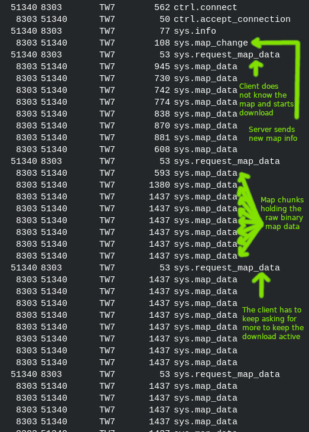
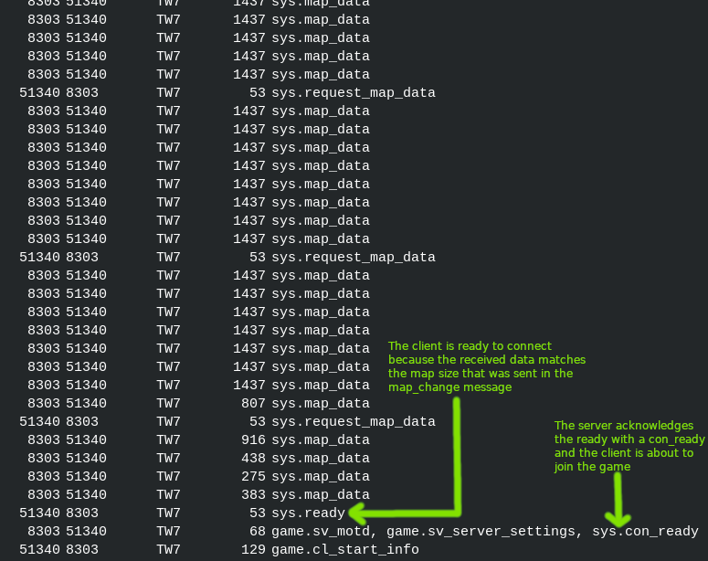

Teeworlds 0.7 map download
Here is a example network traffic dump annotated using
libtw2's wireshark dissector.
The map download process is initiated if the map is changed or a client connects to the server.
And the client does not know the map. Both times the server sends a
NETMSG_MAP_CHANGE
message where the client is supposed to answer with either
NETMSG_CON_READY
indicating that the client knows the map and is ready to enter or with
NETMSG_REQUEST_MAP_DATA
to start the map download process.

Note that the client has to keep sending
NETMSG_REQUEST_MAP_DATA
otherwise the server would stop sending the map data.
Here another dump showing the end of a successful map download.
Since the client knows the total map size from the NETMSG_MAP_CHANGE
message that was sent before. It sends NETMSG_CON_READY
as soon as it got the last data message indicating that it received the full map and wants to connect now.
